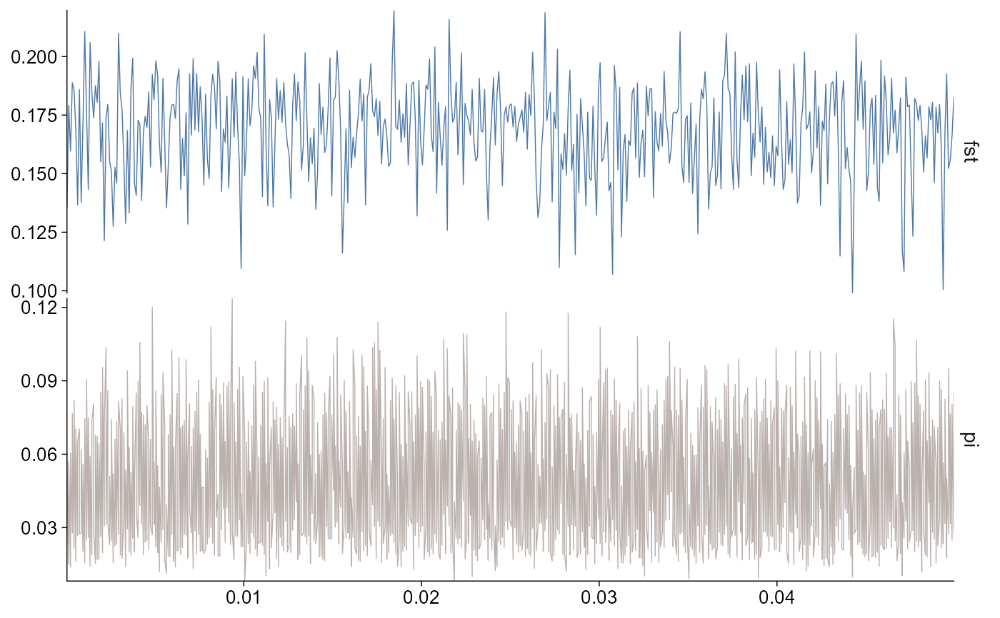
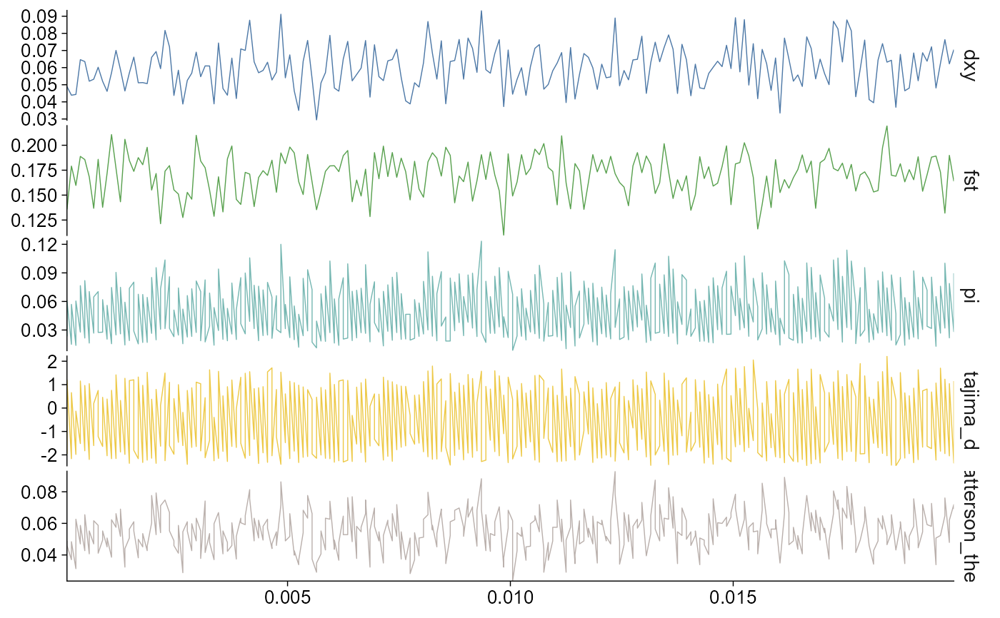
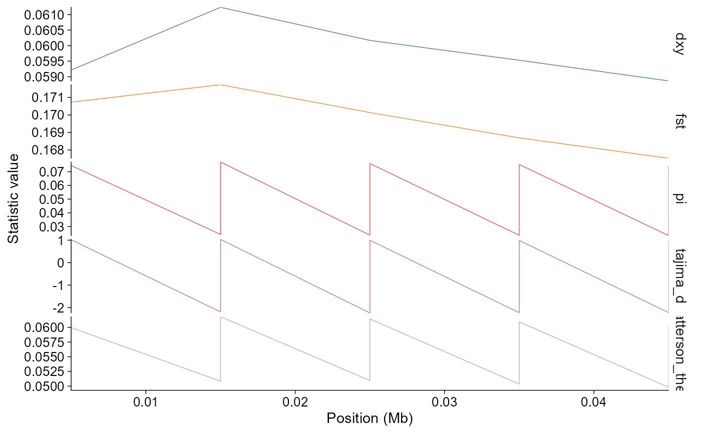

Population genomics statistics plots
geom_stats.RdPlot windowed population genomics summary statistics along a chromosome, selected region, or multiple chromosomes. By default, selected statistics are stacked vertically with an aligned x-axis, following the pixy plotting style.
Usage
geom_stats(
mapping = ggplot2::aes(x = .data$pos/1e+06, y = .data$value),
data = NULL,
...,
stat = "all",
chr = NULL,
start = NULL,
end = NULL,
geom = c("line", "point"),
colour_by = c("stat", "chr"),
size = NULL,
alpha = NULL,
base_size = 11,
base_family = "",
palette = "publication",
na.rm = FALSE,
show.legend = NA,
inherit.aes = TRUE
)
plot_stats(
data,
stat = "all",
chr = NULL,
start = NULL,
end = NULL,
geom = NULL,
title = NULL,
subtitle = NULL,
caption = NULL,
base_size = 11,
base_family = "",
palette = "publication",
...
)Arguments
- mapping
Aesthetic mapping. Defaults to window midpoint in Mb and statistic value.
- data
A
ggpop_statsobject fromimport_stats().- ...
Additional geom parameters.
- stat
Statistic names to plot, e.g.
c("fst", "pi")or"all".- chr
Optional chromosome vector.
- start, end
Optional genomic region boundaries in base pairs.
- geom
Draw
"line"or"point"layers.plot_stats()chooses line for one chromosome and point for multiple chromosomes.- colour_by
Colour by statistic or chromosome.
- size, alpha
Layer appearance. Defaults follow the pixy plotting examples.
- base_size, base_family
Base theme font controls.
- palette
ggpop discrete palette.
- na.rm, show.legend, inherit.aes
Standard ggplot2 layer arguments.
- title, subtitle, caption
Optional plot labels. No default title is added.
Examples
pixy_dir <- system.file("extdata", "Population_genomics_statistics", "pixy", package = "ggpop")
stats <- import_stats(pixy_dir, type = "pixy")
stats |> plot_stats(stat = c("fst", "pi"), chr = "chr2L")

stats |> plot_stats(chr = "chr2L", start = 1, end = 20000)

stats |> ggpop() + geom_stats(stat = "all", chr = c("chr2L", "chr3L"))
